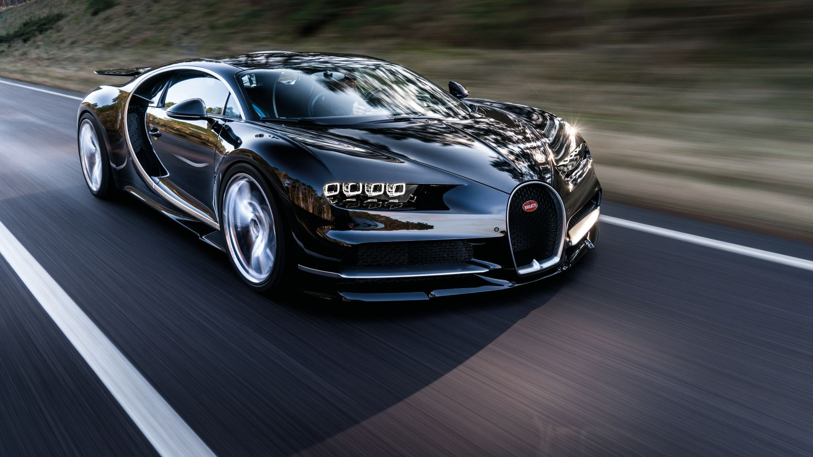
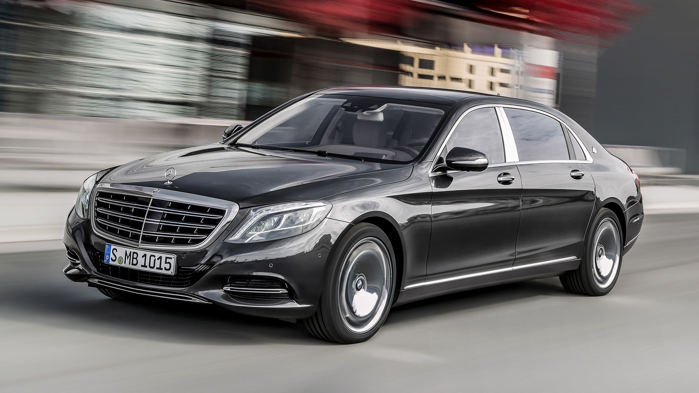
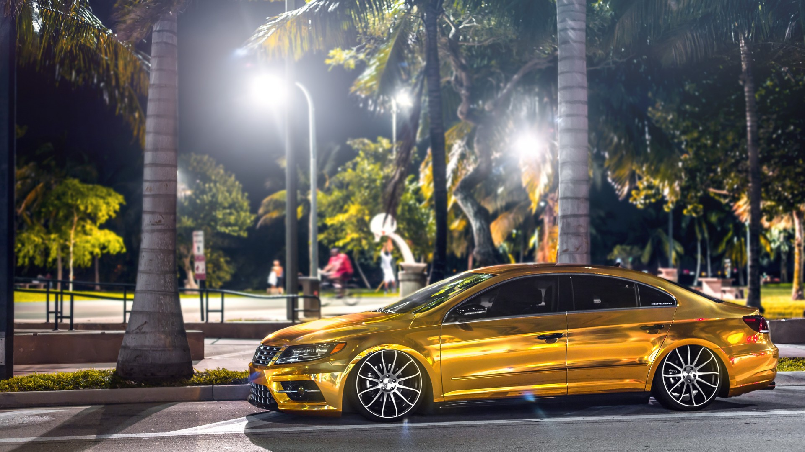

The monster unleashed
Gepost op 24 mei 2016
With the Bugatti Veyron’s top-speed records, a price tag over $1 million, and distinctive melted-scoop-of-ice-cream styling, it was an instant rolling superlative when it debuted in 2005. Its successor, the new Chiron, is even more of a record- and headline-grabbing show pony. Is it faster? A 310-mph (500 km/h) speedometer and Bugatti’s claim that it’ll do 261 mph say it is.
The classy one
Gepost op 22 mei 2016
Daimler is proud of its Mercedes-Benz S-class: The luxury sedan is not only a technology leader, it also outsells the Audi A8 and the BMW 7-series combined. What a contrast to the Maybach 57 and 62, which launched in 2002 and then languished largely unchanged for more than 10 years. Based on the W140 S-class, the Maybach was already somewhat outdated even when new.
Bling Bling
Gepost op 14 mei 2016
Using a metallic gold car paint to coat all or some of your vehicle will give your car a unique appearance that sets it apart from nearly every other vehicle you're liable to see on the road. There are many distinct advantages to using one of several gold car paint colors, but there are also a few risks and downsides you should be aware of as well.